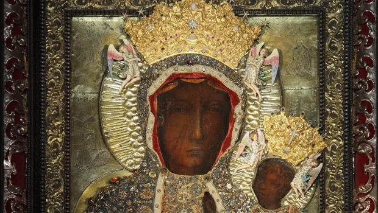
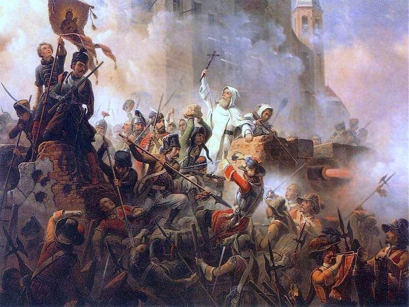
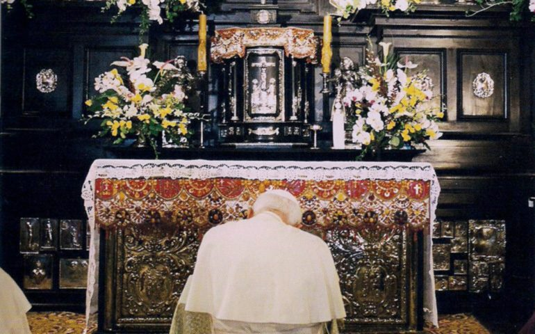
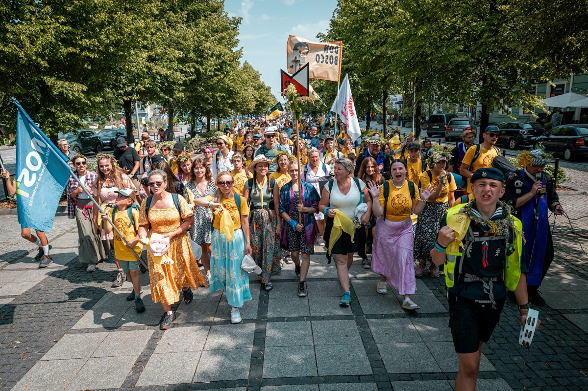

El Icono y su Historia

La tradición piadosa atribuye la autoría del icono de Czestochowa al apóstol San Lucas, quien habría pintado el rostro de María en un tablero de cedro procedente de la mesa de la Sagrada Familia en Nazaret. Aunque esta atribución pertenece al ámbito de la leyenda devocional más que al de la historia verificable, subraya el profundo sentido de sacralidad y proximidad evangélica con que los fieles han venerado siempre esta imagen. Los análisis técnicos sitúan su ejecución en torno al siglo VI o VII, dentro de la tradición iconográfica paleocristiana de Oriente.
El icono llegó a Polonia en el siglo XIV, cuando el príncipe Ladislao de Opole lo trajo desde Belz, en la actual Ucrania, donde había permanecido custodiado durante generaciones. En 1382, Ladislao depositó la imagen en el Monte Claro —Jasna Góra— de Czestochowa, confiándola a la recién establecida comunidad de frailes Paulinos. Desde entonces, el icono no ha salido de allí salvo en circunstancias extraordinarias.
Un episodio traumático marcó la historia del icono para siempre: en 1430, un grupo de salteadores husitas asaltó el monasterio y, entre los actos de pillaje, arrojaron la tabla al suelo y la golpearon con espadas, dejando dos profundas incisiones en el rostro de María, sobre la mejilla derecha. Los restauradores pudieron repintar gran parte de la imagen, pero las cicatrices no desaparecieron porque, según cuenta la tradición, el pincel se negaba a cubrir las marcas. A partir de entonces, esas dos incisiones se convirtieron en uno de los rasgos más característicos y venerados del icono.
El Diluvio Sueco y la Coronación

El año 1655 marca uno de los momentos más oscuros y más gloriosos de la historia polaca. Las tropas suecas del rey Carlos X Gustavo invadieron Polonia en una campaña de devastación que los polacos llamaron el Diluvio: en pocas semanas, casi todo el país había caído en manos enemigas. Uno de los últimos bastiones que permanecía sin rendir era el monasterio de Jasna Góra, defendido por apenas setenta y seis soldados y doscientos voluntarios, al mando del prior Augustyn Kordecki y del noble Stefan Czarniecki.
El asedio comenzó el 18 de noviembre de 1655. El ejército sueco, con sus cañones y su aplastante superioridad numérica, esperaba rendir el monasterio en días. Sin embargo, la guarnición resistió durante cuarenta días, rechazando todos los asaltos. El 26 de diciembre, los suecos levantaron el cerco humillados. La noticia se extendió por Polonia como un rayo: la Virgen de Czestochowa había protegido su santuario. La resistencia de Jasna Góra encendió el espíritu nacional polaco y marcó el inicio de la reconquista del país.
El 1 de abril de 1656, el rey Jan Kazimierz acudió a la catedral de Lwów y, en un acto solemne ante la nobleza y el clero reunidos, consagró Polonia al Inmaculado Corazón de María y proclamó a Nuestra Señora de Czestochowa Reina de Polonia. Este título fue confirmado en 1717, cuando el papa Clemente XI envió coronas de oro para solemnizar la coronación canónica del icono, convirtiéndola en una de las primeras coronaciones marianas pontificias de la historia.
El Siglo XX y Juan Pablo II

El siglo XX sometió a Polonia a las pruebas más extremas de su historia, y en cada una de ellas Jasna Góra fue el referente espiritual de la nación. Durante la Segunda Guerra Mundial, el régimen de ocupación nazi prohibió las peregrinaciones al santuario e intentó apropiarse del icono, sin conseguirlo. Los polacos mantuvieron su devoción en la clandestinidad, y Czestochowa se convirtió en símbolo de identidad nacional frente al aniquilamiento.
Con la instauración del régimen comunista, la represión religiosa sistemática tropezó una y otra vez con la resistencia de una nación que hacía del santuario su centro espiritual. En 1956, para el tricentenario de la coronación de Jan Kazimierz, los obispos polacos encabezados por el cardenal Wyszynski lanzaron los Votos de Jasna Góra, una renovación solemne de la consagración nacional a María que reunió a millones de polacos. El propio Stefan Wyszynski, prisionero del régimen en aquellos años, redactó el texto de los votos desde su celda.
Karol Wojtyla, arzobispo de Cracovia y luego papa Juan Pablo II, había crecido en esta espiritualidad mariana polaca con Czestochowa en el corazón. De joven peregrinó a pie a Jasna Góra. Como papa, regresó al santuario en tres ocasiones: en 1979, en la primera visita a su patria que sacudió los cimientos del comunismo polaco; en 1983 y en 1991. En cada una de esas peregrinaciones, Juan Pablo II se arrodilló largamente ante el icono de la Virgen Negra en silencio. Consideraba que su vocación personal y el destino de la Iglesia estaban encomendados a esa imagen.
Arte e Iconografía
El icono de Nuestra Señora de Czestochowa pertenece al tipo iconográfico conocido como Hodegetria, que en griego significa "la que muestra el camino": María sostiene al Niño Jesús sobre el brazo izquierdo y lo señala con la mano derecha como el camino hacia Dios. El Niño, por su parte, sostiene un libro en la mano izquierda —símbolo del Evangelio— y bendice con la derecha. Ambas figuras miran directamente al espectador con una solemnidad que es característica del arte sacro oriental.
La oscuridad del rostro de María, que le ha valido el nombre popular de Virgen Negra, se atribuye a varios siglos de exposición al humo de las velas y al incienso, aunque hay quienes ven en esa tonalidad una referencia al verso del Cantar de los Cantares: "Morena soy, pero hermosa, hijas de Jerusalén" (Ct 1,5). Las dos incisiones sobre la mejilla derecha, heridas del asalto husita de 1430, son visibles en el icono original y han pasado a ser parte integral de su identidad iconográfica, veneradas como marcas de la pasión compartida entre la Madre y el pueblo que la ama.
El icono está ricamente enmarcado con mantos votivos, coronas de oro y piedras preciosas donados por peregrinos a lo largo de los siglos. Para las fiestas solemnes, la imagen se adorna con su vestidura más rica, en colores que varían según el tiempo litúrgico. La pieza es custodiada en una capilla especialmente construida para ella, donde permanece expuesta a la veneración de los fieles durante la mayor parte del día, descendida mediante un mecanismo de poleas desde detrás de un altar de plata.
Peregrinaciones y Devoción Actual

Jasna Góra recibe cada año a más de cuatro millones de peregrinos, convirtiéndola en uno de los santuarios marianos más visitados del mundo y con diferencia el primero de Europa central y oriental. El flujo de visitantes es constante durante todo el año, pero alcanza su punto culminante en torno al 15 de agosto y al 26 de agosto, fiesta principal de la Virgen de Czestochowa, cuando el recinto del monasterio y sus alrededores se llenan de cientos de miles de devotos llegados de toda Polonia y de la diáspora polaca mundial.
La peregrinación a pie desde Varsovia es la más famosa y la más antigua de las peregrinaciones pedestres a Czestochowa. Se celebra anualmente desde el siglo XVIII y cubre aproximadamente 250 kilómetros en nueve jornadas de marcha. Cada agosto, más de diez mil personas —sacerdotes, religiosas, familias, jóvenes— recorren esa ruta cantando, rezando el rosario y compartiendo la experiencia comunitaria del esfuerzo físico como expresión de fe. Otras ciudades polacas tienen sus propias peregrinaciones a pie, y en total se calcula que cada año más de cien mil personas llegan al santuario caminando.
La devoción a Nuestra Señora de Czestochowa trasciende las fronteras de Polonia. Los emigrantes polacos la introdujeron en Estados Unidos, Canadá, Australia, Brasil y Argentina, donde existen santuarios dedicados a la Virgen Negra. En Chicago, la ciudad con la mayor comunidad polaca fuera de Polonia, el santuario de Nuestra Señora de Czestochowa es un punto de referencia espiritual para generaciones de emigrantes y sus descendientes. La imagen de la Virgen Negra, con sus cicatrices y su mirada severa y compasiva a un tiempo, continúa siendo para millones de personas en todo el mundo el rostro más familiar del amor maternal de María.